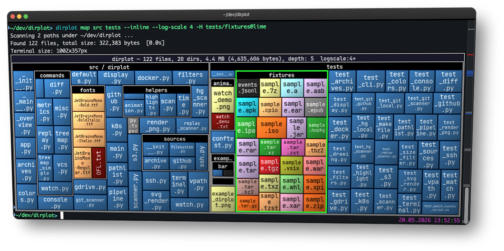

dirplot¶
dirplot creates nested treemap images for directory trees. It can display them in the system image viewer or inline in the terminal (iTerm2 and Kitty protocols, auto-detected). It also animates git history, watches live filesystems, and scans remote sources.
pip install dirplot
dirplot map . # treemap of current directory, opens in system viewer
dirplot map . --inline # display inline in terminal (iTerm2 / Kitty / Ghostty)

Use cases¶
- Find what's eating your disk — map
~/Downloads,~/.cache, ornode_modulesacross a monorepo to spot the culprits at a glance. - Inspect before you install — visualise a Python wheel, JAR, or RPM without unpacking it.
- Understand a codebase instantly — map a legacy project or a large GitHub repo to grasp its structure before reading a single line.
- Compare releases — diff two archive versions or two git tags to see exactly what grew, shrank, or disappeared.
- Scan remote filesystems — map an SSH host, S3 bucket, Docker container, or Kubernetes pod without copying anything locally.
- AI & data exploration — map a vector database, model weights directory, or agent memory folder (
~/.claude/projects/). - Sysadmin at a glance — map
/var/logto see which services generate the most logs, or scan a container image's filesystem layers. - Animate history — watch a repository or live filesystem evolve over time as a timelapse.
Features¶
- Squarified treemap layout; file area proportional to size; per-extension colours (GitHub Linguist palette for known types, configurable Matplotlib colormap for the rest).
- PNG, animated PNG (APNG), MP4, and MOV output for single frames and animations; interactive SVG for static maps; renders at terminal pixel size or a custom
WIDTHxHEIGHT. - Inline terminal display — renders directly into iTerm2, Kitty, Ghostty, WezTerm, and Warp without opening a separate window; protocol auto-detected.
- Animate git history (
dirplot git), Mercurial history (dirplot hg), and replay filesystem event logs (dirplot replay) — output APNG, MP4, or MOV. Watch live filesystems (dirplot watch) to record a JSONL event log for replay, with an optional live snapshot. - Scan metrics (
dirplot metrics) — file/dir counts, total size, depth, top extensions by count or size, largest files and directories with percentage of total; JSON output supported. - Compare two trees (
dirplot diff) — treemap diff of any two sources (local dirs, GitHub repos, archives, S3, SSH, Docker, K8s, or two commits/tags);dirplot diff .shows uncommitted changes; files sized by B; colour-coded borders show added (green), removed (red), and changed (blue) files. Git/hg repos scan only tracked files; change detection uses blob hashes (LFS-aware). - Scan SSH hosts, AWS S3, GitHub repos (public and private), Docker containers, Kubernetes pods, and Google Drive — no extra deps beyond the respective CLI. See Examples.
- Read archives directly (zip, tar, 7z, rar, jar, whl, …) without unpacking.
- Works on macOS, Linux, and Windows (WSL2 fully supported).
Quick start¶
dirplot map . # current directory, opens in viewer
dirplot map . --inline # display in terminal (iTerm2/Kitty/Ghostty)
dirplot map . --output treemap.png --no-show # save to file
dirplot map . --log-scale 4 # log scale when one file dominates
dirplot map github://pallets/flask # GitHub repo
dirplot map project.zip # archive — no unpacking needed
dirplot diff . # uncommitted changes
dirplot diff .@HEAD~5 .@HEAD # last 5 commits
dirplot metrics . # file counts, sizes, top extensions
dirplot git . --range main --output h.mp4 # full git history as MP4
See Examples for the full command gallery.
Contributing¶
Bug reports, feature requests, and example contributions are welcome — please open an issue on GitHub.
See the full changelog and releases for what's new in each version.
Transparency¶
A significant portion of this codebase was developed with AI assistance (primarily Claude by Anthropic). All generated code was reviewed and curated by the author.